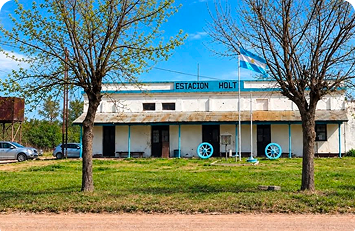
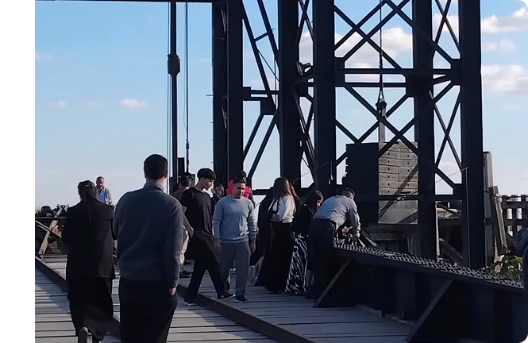
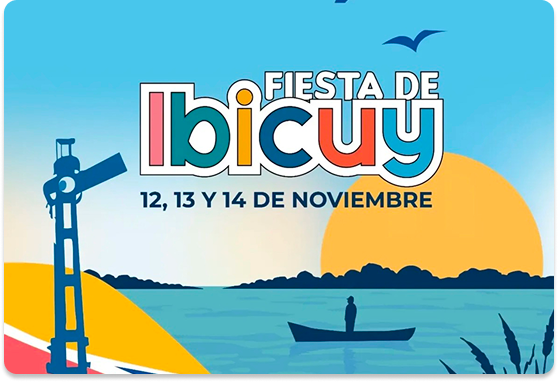
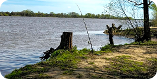
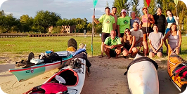
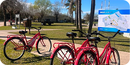
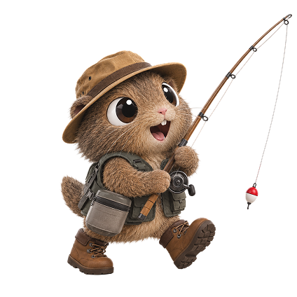

Ibicuy combina las huellas de su pasado ferroviario y portuario con los espacios, actividades y paisajes que forman parte de su vida actual.


Conocé las actividades, celebraciones y propuestas que mantienen viva la identidad y las tradiciones de Ibicuy.
La Fiesta de Ibicuy reúne a la comunidad para celebrar el aniversario del pueblo, con espectáculos musicales, feria de artesanos y propuestas gastronómicas en el Escenario Mayor y la Plaza San Martín.
Talleres de danzas tradicionales, muestras fotográficas que rescatan la historia del ferrocarril, espacios de lectura y otras propuestas que promueven la cultura y las tradiciones locales.
Espacios deportivos, senderos para descubrir la naturaleza de Ibicuy y actividades recreativas en distintos lugares del pueblo, que invitan a compartir y disfrutar de la vida al aire libre.
El vínculo con el agua y los espacios naturales nos permite encontrar distintas actividades al aire libre.



Todo lo que necesitás saber para visitar Ibicuy
Encontrá cómo llegar, dónde estamos y toda la información que necesitás para conocer la localidad.
QUIERO SABER MÁS